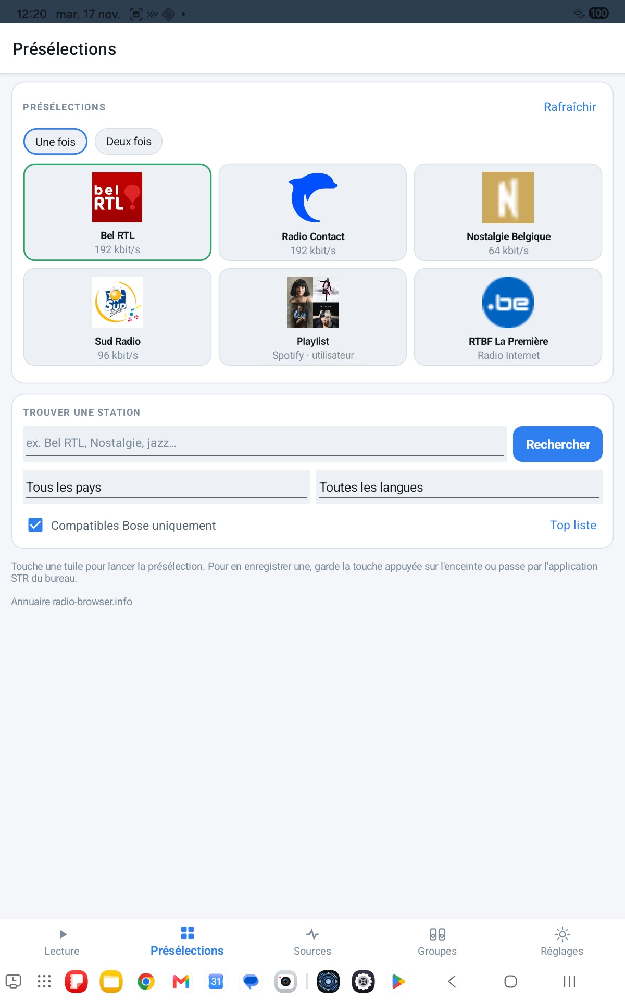

SoundReborn Remote — Handleiding
Versie 1.9.2 · Android 7 en hoger
Inhoud
- Wat je vooraf nodig hebt
- Installeren
- Eerste start
- Het tabblad Afspelen
- Het tabblad Presets
- Het tabblad Bronnen
- Het tabblad Groepen
- Het tabblad Instellingen
- Gebaren
- Wat te doen als…
- Bekende beperkingen
- Vermeldingen
1. Wat je vooraf nodig hebt
SoundReborn Remote bedient Bose SoundTouch-speakers vanaf een Android-telefoon of -tablet. Alles gebeurt op je eigen netwerk: geen account, geen onlinedienst, geen gegevens die het huis verlaten.
Vier voorwaarden:
- Telefoon en speakers op dezelfde wifi. Let op gastnetwerken en modems die apparaten van elkaar afschermen — dan wordt er niets gevonden.
- De STR-agent op de speakers. Die vervangt wat de Bose-cloud deed tot ze op 6 mei 2026 werd uitgezet. Zonder de agent werkt de app nog wel, maar beperkt tot wat de firmware alleen biedt: volume, bass, al opgeslagen toetsen. Zenders zoeken, toetsen toewijzen en betrouwbaar groeperen lopen allemaal via de agent. Installeren gebeurt met het STR-programma voor pc of Mac — https://st-reborn.de. Deze app installeert hem niet; ze wijst alleen de speakers aan die hem missen.
- Een STR-agent 1.8.0 of nieuwer om groepen te wijzigen. Met een oudere agent meldt de app dat en laat ze de groepen ongemoeid; de rest werkt.
- Android 7 of hoger.
2. Installeren
De app wordt niet via de Play Store verspreid. Je downloadt ze op de Releases-pagina van het project: https://github.com/ben240374/SoundRebornRemote/releases
- Download het
.apk-bestand op de telefoon. - Open het. Android vraagt toestemming om uit een onbekende bron te installeren — geef die aan de app die gedownload heeft, meestal de browser.
- Installeren, daarna openen.
Daarna meldt de app zelf nieuwe versies en kan ze installeren (tabblad Instellingen, Update).
Bij de eerste start wordt geen bijzondere toestemming gevraagd: de app raakt contacten, locatie noch opslag aan.
3. Eerste start
De app start in de taal van de telefoon als ze die kent — Frans, Engels, Duits, Nederlands, Spaans, Italiaans — en anders in het Engels. Je kunt dit altijd wijzigen.
Bij de eerste start is er nog geen speaker bekend. Ga naar Instellingen en dan Lokaal netwerk scannen.

De zoekactie verloopt in twee stappen. Eerst vraagt ze apparaten zich aan te melden (mDNS) — de snelle weg, twee tot drie seconden. Antwoordt niemand, dan bevraagt ze alle 254 adressen van het subnet één voor één op poort 8090: enkele seconden trager, maar het werkt ook waar multicast wordt gefilterd.
Gevonden speakers verschijnen onder BEKENDE SPEAKERS. Tik bij de gewenste op Gebruiken. Hij wordt onthouden: bij de volgende start verbindt de app zich er vanzelf weer mee.
Vindt de scan niets terwijl je het IP-adres van de speaker kent, typ het dan in het daarvoor bestemde veld en tik op Toevoegen.
4. Het tabblad Afspelen
Het hoofdscherm, dat je opent om snel iets te doen.

De speaker kiezen
Bovenaan één kaart per bekende speaker, met model en versie van de STR-agent. De blauw omlijnde kaart is de bediende speaker; tik op een andere kaart om te wisselen, zonder langs de instellingen te gaan.
Het puntje rechts toont de verbinding: live betekent dat de speaker zijn wijzigingen meteen doorgeeft, peiling dat de app ze met tussenpozen opnieuw uitleest. Bij peiling duurt het een seconde of twee voor een wijziging van een andere afstandsbediening zichtbaar wordt.
Nu aan het spelen
De hoes, de titel en de bron van wat er speelt. Bij een radiozender diens logo en naam, bij Spotify de albumhoes.
Als Spotify speelt en de STR-agent versie 1.8.1 of nieuwer heeft, verschijnen onder de titel twee knoppen: Vind ik leuk voegt het huidige nummer toe aan Gelikete nummers, Vind ik niet leuk haalt het eruit, zoals de duimtoetsen van de afstandsbediening. Het nummer gaat naar het Spotify-account waarmee de speaker is aangemeld, niet per se dat op je telefoon. Een speaker met scherm toont “LIKED” of “REMOVED”.
Tijdens een Spotify-toets (een preset die een Spotify-afspeellijst speelt) kent de speaker alleen de naam van de afspeellijst. Met STR-agent 1.8.2 of nieuwer toont de app in plaats daarvan het nummer, de artiest en de hoes, met “Spotify · afspeellijst” als bron; het nummer wordt ongeveer elke vijf seconden opnieuw gelezen.
Bij een internetradio toont de app ook het nummer dat de zender aankondigt, zoals het scherm van de speaker: de titel groot, de artiest eronder, en “zender · Internetradio” als bron. Een zender die niets stuurt, of alleen zijn eigen naam, houdt de gewone weergave; een tekst zonder artiest (een programma, reclame) wordt getoond zoals hij is. Het nummer wordt ongeveer elke vijf seconden opnieuw gelezen.
Bediening
Vier toetsen: stoppen, vorige, afspelen/pauzeren, volgende. Afhankelijk van de bron doen sommige niets — een live radiostream laat zich niet terugspoelen.
De groene balk Stand-by schakelt de speaker uit; is hij uit, dan staat er Inschakelen.
Onder de balk zet Slaaptimer de speaker na 15 tot 120 minuten in stand-by. Zolang hij loopt, toont de link de resterende tijd; tik erop om de duur te wijzigen of te annuleren. In een groep vraagt de app of de hele groep moet uitgaan of alleen de geselecteerde speaker. De timer leeft in de STR-agent van de speaker: hij loopt door als je de app sluit, maar een herstart van de speaker annuleert hem. De link verschijnt alleen als de agent de timer kent.
Volume
Demping, gelijkzetten, min, schuif, plus. Het percentage staat rechts.
Hoort de speaker bij een groep, dan wordt deze schuif het volume van de hele groep: hij verschuift alle speakers met dezelfde stap en houdt zo de verhouding aan die je hebt ingesteld. Keuken op 60 en woonkamer op 30 — de groep 10 omhoog geeft 70 en 40, niet 70 en 35.
De toets = tussen demping en min doet het omgekeerde: hij zet alle speakers van de groep op de getoonde waarde. Groep op 25, iedereen op 25. Hij verschijnt alleen zolang er een groep actief is — alleen valt er niets gelijk te zetten.
Onder de schuif geeft Per speaker een regel per lid van de groep, met een eigen schuif en eigen toetsen − en +, zodat je de keuken zachter kunt zetten zonder de woonkamer aan te raken. Een uitgeschakelde speaker staat vaag en reageert niet: een opdracht ernaartoe zou de app alleen voor niets laten wachten.
Bass en presets

De bass loopt van -10 tot +10, afhankelijk van het model. Een regeling voor hoge tonen is er niet: de API van de speaker biedt die niet — het is geen vergetelheid van de app.
De zes presets staan hier ook, om een tabbladwissel te besparen. De groen omlijnde tegel is degene die speelt.
Als de STR-agent de tweede rij ondersteunt, verschijnen boven de tegels twee knoppen, Eén keer en Twee keer: de tweede toont de zes zenders die de speaker start wanneer een toets twee keer wordt ingedrukt. De keuze geldt voor beide tabbladen. Elke tegel toont bovenaan de naam van zijn toets (“Toets 1” tot “Toets 6”, in beide rijen), en de knop Twee keer draagt een klein getal: hoeveel toetsen van de tweede rij een zender hebben.
Rechts van de knoppen vervangt Lokaal de tegels door je lokale presets, die op de telefoon blijven (zie het tabblad Presets); Eén keer brengt de toetsen van de speaker terug. De knoppen tonen een tekening in plaats van een woord: één opgestoken vinger voor Eén keer, twee vingers voor Twee keer, een telefoon voor Lokaal, een ster voor ★ STR. Lang drukken toont hun naam.
Ook de knop Eén keer draagt een klein getal: hoeveel toetsen van de eerste rij een zender hebben.
Wat nu speelt op een toets zetten, onder de tegels, bewaart wat de speaker op dit moment speelt — zender, album of nummer uit de bibliotheek — op de toets van je keuze. Spotify, AUX en Bluetooth kunnen zo niet worden bewaard.
Spraakbericht
De kaart Spraakbericht laat de speaker spreken en daarna verdergaan met wat hij speelde.
- Je stem: houd de ronde microfoonknop ingedrukt terwijl je spreekt en laat hem los om te versturen (hoogstens 1 minuut). Tijdens de opname wordt de knop rood. De telefoon houdt het bericht bij tot de speaker het komt ophalen en wist het daarna.
- Een tekst: typ hem onder de knop, dan Voorlezen. De speaker leest hem met de stem van Google, in de taal van de app; hij heeft internettoegang nodig, en de tekst gaat via Google.
- Bewaren zet de getypte tekst in de lijst van bewaarde teksten (hoogstens tien). Tik op een bewaarde tekst om hem te laten voorlezen; ✎ bewerkt hem, ✕ verwijdert hem na bevestiging.
Een korte trilling meldt dat de microfoon loopt: spreek vanaf dan. De app voegt wat stilte toe voor en na je bericht, zodat de speaker, die zijn versterker met vertraging opent, het begin niet inslikt. Een tekst telt hoogstens 200 tekens.
De schuifregelaar Volume van aankondigingen regelt het volume van het bericht, stem en tekst: helemaal links houdt de speaker zijn volume; anders gaat hij voor het bericht naar dat volume en daarna terug naar het vorige. De microfoon van de telefoon is niet instelbaar: voor een luider bericht schuif je deze regelaar hoger.
Het bericht gaat naar de speaker die de opdrachten krijgt. Het speelt nog niet op alle speakers van een groep: dat is gepland in de STR-agent. De eerste keer vraagt Android toegang tot de microfoon. De kaart verschijnt alleen met de STR-agent.
Groeperen met
Eén chip per speaker, behalve die welke de opdrachten krijgt. Tik erop om die speaker aan de groep toe te voegen; een vinkje en een groene rand verschijnen. Nog een tik haalt hem er weer uit.
Groeperen duurt enkele seconden: intussen toont het blok Groeperen met …, daarna het resultaat — of de fout, in het rood.
De master wordt opgezocht, niet aangenomen. In een groep speelt één speaker af en volgen de andere. Kies je een speaker die volgt, dan zegt de app dat — Gegroepeerd met …, in amber — en stuurt bediening, presets en volume naar de master, want die speelt af. Een speaker kiezen onderbreekt dus nooit wat je aan het luisteren bent. Stand-by en de slaaptimer zijn de uitzondering: die werken op de geselecteerde speaker.
Op een volgende speaker is de aangevinkte chip die speaker zelf: erop tikken verlaat de groep. Uitbreiden gebeurt vanaf de master, want die stelt de groep samen.
Een speaker uitzetten haalt hem eerst uit de groep en heft de groep op als het de laatste was. Zet je hem weer aan, dan staat hij op zichzelf, speelt af wat hij af te spelen heeft, en kun je hem opnieuw groeperen.
De link Vernieuwen onderaan leest alles opnieuw: lopende titel, hoes, volume, staat van de groep.
Speelt de speaker die je toevoegt iets anders, of staat hij op pauze, dan zegt de app dat vóór het groeperen: “Salon speelt Radio Contact. Toevoegen aan de groep stopt dat om Bel RTL te spelen.” Er verandert niets tot je op Toevoegen tikt. Een speaker in stand-by, of een die al hetzelfde speelt, wordt zonder vraag toegevoegd.
5. Het tabblad Presets

De zes toetsen
Dezelfde als de fysieke toetsen op de speaker. Elke tegel toont het zenderlogo en de bitrate. Tikken start het afspelen; de groene omlijning markeert wat er speelt.
Logo's worden gedownload en daarna lokaal bewaard. Ontbreekt er een, dan publiceert de zender geen bruikbare afbeelding, of antwoordt zijn server niet.
Eén keer, twee keer
Met een recente STR-agent (v1.6 en later) draagt elke toets van de speaker twee zenders: één druk start de eerste, twee snelle drukken de tweede. De knoppen Eén keer en Twee keer kiezen de getoonde rij; de tegels houden hun toetsnummer, ① tot ⑥.
De tweede rij bestaat alleen in de agent: op een speaker zonder agent, of met een oudere, verschijnen de knoppen niet.
Een toets die alleen in de tweede rij een zender heeft, verschijnt leeg onder Eén keer: één druk op de speaker start dan de zender van de tweede rij (STR-agent 1.6.3 en nieuwer).
Lokale presets
De knop Lokaal, rechts, toont presets die op de telefoon blijven, naast de toetsen van de speaker, zoveel je wilt (hoogstens 100). Tik op een regel om de zender op de gekozen speaker te starten; ✎ hernoemt hem, ✕ verwijdert hem na bevestiging. De regel van de zender die speelt is groen.
Om er toe te voegen:
- Wat speelt toevoegen bewaart de zender die de speaker nu speelt, met het oorspronkelijke adres van de stream en zijn logo;
- Adres toevoegen vraagt het http- of https-adres van de stream, dan een naam;
- tik in de zoekfunctie op een zender, dan Toevoegen aan Lokaal.
Deze presets blijven op deze telefoon: de toetsen van de speaker kennen ze niet, en een andere telefoon ziet ze niet. Een Spotify-afspeellijst kan er niet in: de STR-agent start een afspeellijst alleen vanaf een van zijn toetsen. Om ze bij een herinstallatie te bewaren, exporteer je ze in het tabblad Instellingen (Back-up van favorieten).
Een toets hernoemen en wissen
Elke tegel toont bovenaan de naam van zijn toets. Bij een toets die de STR-agent heeft opgeslagen staan er twee kleine knoppen naast: ✎ hernoemt de toets en ✕ wist hem, na bevestiging. Hernoemen verandert alleen de getoonde naam: de zender, zijn afbeelding en de afspeellijst van een Spotify-toets blijven. Een naam telt hoogstens 64 tekens. De knop Twee keer toont hoeveel toetsen van de tweede rij een zender hebben.
Een toets die alleen de firmware van de speaker kent, en een lege toets, hebben die knoppen niet: de agent zou niets te hernoemen of te wissen hebben.
De toetsen naar een andere speaker kopiëren
De kaart Toetsen kopiëren kopieert alle toetsen van de gekozen speaker naar een andere STR-speaker, of naar allemaal. Tik op Kopiëren naar…, kies het doel en bevestig. Elke toets die hier is ingesteld, vervangt die van het doel; de andere toetsen van het doel blijven. Beide rijen gaan naar een doel dat er twee heeft. Hoort er een Spotify-toets bij de kopie, dan wordt het Spotify-account van deze speaker aan het doel doorgegeven: de bevestigingsvraag zegt het. Het resultaat verschijnt per speaker.
Kopiëren vereist STR-agent 1.6.5 of nieuwer op de gekozen speaker.
STR-favorieten
Met een recente STR-agent toont de knop ★ STR, rechts van Lokaal (tabbladen Afspelen en Presets), in plaats van de toetsen de zenders met een ster in de STR-app op de computer. Ze zijn op elke STR-speaker dezelfde: een favoriet die je hier toevoegt of verwijdert, verandert enkele seconden later ook op de andere speakers en op de computer. Eén keer of Twee keer brengt de toetsen terug.
- Tik op een favoriet om hem op de geselecteerde speaker te spelen.
- ⋯ biedt Op een toets zetten…, Toevoegen aan Lokaal en Uit STR-favorieten verwijderen (na bevestiging).
- ★ Wat nu speelt toevoegen bewaart de radio die de speaker speelt; in het zoeken biedt ⋯ Toetsen, Local… ★ Aan STR-favorieten toevoegen.
- Een Pandora-zender staat in de lijst, maar start vanuit de STR-app.
Een zender vinden
Het zoekveld bevraagt radio-browser.info, een open gids die door vrijwilligers wordt bijgehouden. Het zoeken volgt dat van de STR-desktopapp:
- Land (alle in alfabetische volgorde, overzeese gebieden inbegrepen: Martinique, Réunion, Guadeloupe…) en Taal beperken de zoekactie; Sorteren rangschikt op populariteit (stemmen), beluisteringen, trend, naam of bitrate. Een wijziging herhaalt de laatste zoekactie.
- De genrechips (Alle, Pop, Rock, Hits, Jazz, Jaren 80…) filteren op genre; de eerste twee hangen van het land af (Levenslied en Nederlandstalig voor Nederland). Meer genres voegt de meest voorkomende genres van de gids toe. Zonder iets te typen doorbladert een chip de gids, zoals de Toplijst.
- Toplijst toont de zenders met de meeste stemmen, met deze filters.
- Een zoekopdracht van meerdere woorden zoekt die woorden ook in de genres („rock belge”), en vindt een naam met andere leestekens („Mi Soul” vindt „Mi-Soul”).
- Een stream-adres dat je in het veld plakt (http://… of https://…) vindt de zender van de gids die het uitzendt; een onbekend adres verschijnt als Geplakt adres, dat je kunt beluisteren of opslaan zoals elke andere zender.
- Meer tonen, onder de resultaten, voegt de volgende pagina toe.
Alleen werkende zenders (standaard aan) laat de zenders weg die de gids bij de laatste controle onbereikbaar vond. Een net toegevoegde, nog niet gecontroleerde zender blijft zichtbaar. Vindt een naam alleen zenders die als onbereikbaar gemeld zijn, dan worden ze toch getoond, met een waarschuwing: de gids controleert vanuit het buitenland, en een zender die alleen in zijn eigen land uitzendt lijkt daar dood terwijl hij bij jou prima speelt.
Alleen Bose-compatibel (standaard aan, zo laten) filtert de formaten weg die SoundTouch-speakers niet kunnen decoderen (Ogg, Opus, FLAC) en die stilte zonder foutmelding zouden opleveren. Bitrate verbergt zenders onder een gekozen bitrate; zenders zonder bekende bitrate blijven. Beide filters werken op de ontvangen lijst, zonder nieuwe zoekactie, en het aantal verborgen zenders staat onder de titel van de resultaten.
Mist er een zender? De link onder de resultaten opent radio-browser.info, waar iedereen hem kan toevoegen: dan vind je hem hier, en iedereen met jou.
Tik op een resultaat: de regel opent en biedt drie keuzes die je niet kunt verwarren.
- 📱 ▶ Beluisteren op deze telefoon (of deze tablet): de zender speelt op het apparaat, zodat je hem hoort voor je hem op de speaker zet. De knop wordt 📱 ■ Stoppen; een balk boven de resultaten toont wat er speelt, met ■ Stoppen en 🔊 Afspelen op …. Eén zender tegelijk; het stopt als je het tabblad of de app verlaat, en als je de zender op de speaker zet. Zonder wifi gebruikt het mobiele data (ongeveer 1 MB per minuut bij 128 kbit/s). Een zender die niet op het apparaat speelt, kan toch op de speaker spelen: de STR-agent zet formaten om die de speler van Android niet leest.
- 🔊 Afspelen op Keuken: met de volledige naam van de gekozen speaker; de zender start daar, zonder iets op te slaan.
- ⋯ Toetsen, Local… opent een actieblad met Afspelen op Keuken, ★ Aan STR-favorieten toevoegen (recente agent), Toevoegen aan Local, dan ① Aan deze toets toewijzen als de toets vrij is, of ① Bel RTL vervangen als hij bezet is — de naam van de zender die er al staat wordt getoond, zodat je er geen overschrijft waar je aan hechtte.
Toewijzen vereist de STR-agent. Zonder hem kun je alleen meteen luisteren; opslaan gebeurt dan door de toets op de speaker zelf ingedrukt te houden, of via de STR-desktopapp.
Met de tweede rij biedt het menu twaalf toetsen aan: ① tot ⑥, daarna ①×2 tot ⑥×2. Een zender staat maar op één toets: staat hij al ergens anders, dan weigert de agent en zegt de app op welke toets hij staat.
6. Het tabblad Bronnen

Bluetooth, AUX en Stand-by bovenaan: drie rechtstreekse snelkoppelingen.
Spotify wordt niet vanuit deze app bediend. Open Spotify op je telefoon en kies de speaker in de apparaatkiezer (Spotify Connect): hij verschijnt daar zodra de STR-agent draait.
Bronnen van de speaker toont wat de speaker opgeeft, met de toestand: READY betekent
beschikbaar, UNAVAILABLE dat de bron wel bestaat maar niet bruikbaar is — doorgaans een
streamingdienst waarvan het account sinds de cloud-afsluiting onbereikbaar is.
Een stream afspelen aanvaardt het adres van een rechtstreekse audiostream — een
.mp3 of een .m3u8 — en start die op de speaker. Handig voor een webradio die in de
gids ontbreekt. Hiervoor is de STR-agent nodig.
Opnemen bewaart een fragment van de internetradio die de speaker afspeelt op je telefoon, om het opnieuw te beluisteren of door te sturen (WhatsApp, e-mail…). Tik op Opnemen: de opname stopt wanneer je op Stoppen tikt, of vanzelf na 5 minuten. Ze loopt door met het scherm uit: een melding "Opname bezig" toont de teller en een knop Stoppen. Bij de eerste opname vragen Android 13 en later om meldingen toe te staan; weiger je, dan wordt er toch opgenomen, alleen zonder melding.
Alleen internetradio's waarvan de stream bereikbaar is, kunnen worden opgenomen:
STR-voorkeuzes, zenders uit de gids, met de hand gestarte streams. Spotify, Deezer,
Bluetooth en AUX lopen niet via de telefoon en kunnen niet worden opgenomen, HLS-streams
(.m3u8) evenmin. De telefoon opent de stream van de zender naast de speaker: het
luisteren wordt niet verstoord, maar de opname verbruikt data, ongeveer 1 MB per minuut.
De lijst bewaart de laatste 10 opnames, met zender, datum en duur. ▶ speelt ze af op de telefoon, ⤴ opent het deelmenu van Android, de prullenbak verwijdert na bevestiging. Boven 10 weigert de app een nieuwe opname: verwijder eerst die je niet meer nodig hebt. De opnames blijven in de app en verdwijnen als je de app verwijdert. De lijst blijft beschikbaar, ook als geen enkele speaker antwoordt: alleen opnemen is dan niet mogelijk.
Terwijl een opname speelt, verschijnen eronder een schuifbalk en een teller: “01:23 / 04:50”, positie en duur. Versleep de balk om door de opname te gaan.
Onlangs afgespeeld toont de geschiedenis die de agent bijhoudt: tik op een regel om opnieuw te starten.
Een album of map uit de bibliotheek wordt volledig opnieuw afgespeeld, niet alleen het eerste nummer. Staat de mediaserver uit, dan zegt de app dat, in plaats van een weergave aan te kondigen die nooit start.
7. Het tabblad Groepen

Masterspeaker noemt degene die werkelijk afspeelt — afgelezen bij de speakers zelf, niet aangenomen als degene die je hebt gekozen.
Te groeperen speakers: vink aan wie moet volgen, dan Groeperen. Opheffen haalt de hele groep uit elkaar.
Een speaker hoort maar bij één groep tegelijk, en de master stelt die samen. Volgt de gekozen speaker een andere, dan is Groeperen grijs en verwijst een bericht je naar de master.
De optie Blijvende groep vraagt de agent de groep bij de volgende weergave opnieuw te vormen, in plaats van hem uiteen te laten vallen als de muziek stopt. De app leest deze vlag nu terug voordat zij een bestaande groep uitbreidt en geeft hem ongewijzigd door: één speaker toevoegen maakt van een blijvende groep geen gewone meer.
Groepsvolume werkt op alle speakers tegelijk en verschuift de waarden zonder de onderlinge afstanden aan te tasten. Keuken op 60 en woonkamer op 30 — de groep 10 omhoog geeft 70 en 40, niet 70 en 35. Onder die schuif heeft elke speaker van de groep zijn eigen. Op de hele groep toepassen zet iedereen op dezelfde waarde, net als de toets = in het tabblad Afspelen.
Een permanente groep blijft zoals je hem hebt samengesteld. Een van de speakers in stand-by zetten haalt hem uit de groep die speelt, zonder hem uit de opgeslagen groep te verwijderen: bij de volgende weergave doet hij weer mee. En als een permanente groep op zijn volgende weergave wacht, meldt de app dat en vraagt hij om bevestiging voordat er een andere groep voor in de plaats komt.
Speelt er geen groep, is er een gewone groep opgeslagen en vink je Permanente groep aan, dan vraagt de app ook eerst bevestiging: een permanente groep die de agent erachter apart houdt, zou vervangen worden.
Het blok Groepsvolume verschijnt alleen wanneer er een groep bestaat.
8. Het tabblad Instellingen

Gekozen speaker: naam, adres en model. Dit is de speaker die jij hebt gekozen — niet per se degene die de opdrachten krijgt. Volgt hij een groep, dan zegt een amberkleurige regel waar de opdrachten werkelijk heen gaan, en waarom.
Wekkers: die van de gekozen speaker — een wekker laat alleen de speaker afgaan waarop hij is opgeslagen, ook in een groep. Elke wekker speelt een toets (1 tot 6, of 1 tot 6 twee keer ingedrukt) op het gekozen uur en de gekozen dagen (de snelkoppelingen Ma → Vr, Weekend en Elke dag vinken de dagen in één keer aan; elk vakje blijft apart aan te passen). Je stelt ook het volume in (of houdt dat van de speaker), het automatisch uitschakelen en de sluimerduur. De kaart toont de volgende wekker zoals de speaker hem plant, en waarschuwt als zijn klok nog niet goed staat. Is de tijdzone van de speaker leeg (UTC), dan wordt die van de telefoon met de volgende wekker opgeslagen. Elders gewijzigde wekkers — STR-telefoonpagina, desktopapp — worden niet overschreven: de app slaat alleen op wat jij hebt gewijzigd. Vereist de STR-agent. Het uur stel je in op de klok van de telefoon. Het prullenbakje van een regel verwijdert de wekker, na bevestiging.
Startvolume: het niveau dat de speaker krijgt wanneer hij wordt aangezet en begint te spelen. Vink het vakje aan, kies het niveau en tik op Startvolume opslaan. Een volume dat tijdens het luisteren is ingesteld, wordt nooit gewijzigd.
Sluimertoets (in de wekkerkaart): vink de toets van de afstandsbediening aan die een afgaande wekker laat sluimeren — AUX, Duim omhoog of Duim omlaag — en dan Sluimertoets opslaan. Buiten een wekker doet een duimtoets niets en schakelt AUX zoals gewoonlijk naar de AUX-ingang. Een duimtoets die al een andere actie heeft (slaaptimer, bas…) zegt dat; aanvinken vervangt die, en de app zegt het vooraf. Alleen de vakjes die je verandert worden geschreven: een actie die elders op een andere toets is gezet, blijft. Een toets met een opgeslagen groep weigert de speaker, met de reden.
Taal: Nederlands, Frans, Engels, Duits, Spaans, Italiaans. De wijziging geldt meteen, zonder herstart, en wordt onthouden.
Thema: Systeem, Licht of Donker. "Systeem" volgt de weergave-instelling van de telefoon, inclusief de automatische omschakeling 's avonds.
Zoeken: de netwerkscan en het handmatig invoeren van een IP-adres. Het zoeken vraagt eerst mDNS en doorzoekt het subnet alleen als dat niets oplevert. De scan blijft beperkt tot privé-adresbereiken en bereikt dus nooit een mobiel netwerk of een VPN-tunnel.
Bekende speakers: de onthouden lijst. Gebruiken schakelt over, ✕ vergeet hem. Een speaker met de melding "Geen STR — klaar voor installatie" antwoordt prima maar heeft geen agent; verderop verschijnt dan een uitlegblok met een link naar de site van het STR-project.
Een speaker waarvan de agent ouder is dan versie 1.8.0 toont een vergelijkbaar blok, STR-agent te oud, en zijn kaart in het tabblad Afspelen vermeldt "te oud".
STR-agent: nieuwe versie: hoogstens één keer per dag, bij het openen van Instellingen, leest de app op GitHub de nieuwste versie van de STR-agent. Hebben bekende speakers een oudere agent, dan noemt een kaart ze, met Nieuw en Later (de kaart komt terug bij de volgende versie), en hun kaart in het tabblad Afspelen toont "1.9.1 beschikbaar". De agent wordt bijgewerkt met de STR-app op de computer. Het vakje Automatisch controleren van de kaart Update zet ook dit uit.
Diagnose: Speaker bevragen gaat over de gekozen speaker — naam, model, apparaat-ID, firmwareversie, de agent met zijn poort en zijn live op 17008 en 8888 gelezen versie, de staat van de meldingen, het bassbereik, de lijst met herkende API-eindpunten, en wat elke bekende speaker over de huidige zone verklaart. Dit is de informatie die bij een probleemmelding hoort. Logocache legen dwingt het opnieuw ophalen van zenderafbeeldingen af.
Back-up van favorieten: de lokale presets en de bewaarde teksten van het spraakbericht leven alleen op de telefoon. Een update houdt ze; een verwijdering wist ze, ook die welke Android eist voor het installeren van een APK met een andere sleutel. Exporteren maakt een bestand en opent delen (Drive, e-mail, Bestanden…); Importeren leest zo'n bestand terug en voegt toe wat ontbreekt, zonder iets te vervangen of te verwijderen.
Back-up van de speaker: In een bestand opslaan bewaart wat de STR-agent voor de geselecteerde speaker opslaat — de toetsen 1 tot 12 (een Spotify-toets met zijn playlist), de wekkers, het startvolume en de sluimertoets. Terugzetten uit een bestand… zet ze terug, na een vraag die de doelspeaker en de herkomst van het bestand noemt: het bestand kan deze instellingen ook naar een andere speaker kopiëren. De toetsen uit het bestand vervangen die van de speaker, de andere blijven; zijn wekkers worden vervangen. Zonder tweede rij op de doelspeaker worden de toetsen 7 tot 12 overgeslagen. Het verslag zegt wat teruggezet is en wat de speaker weigerde. De vaste groep wordt niet bewaard. Een Spotify-toets speelt alleen als de speaker met hetzelfde Spotify-account verbonden is. STR-agent vereist.
Update (versie geïnstalleerd vanaf GitHub): hoogstens één keer per dag vraagt de app aan GitHub of er een nieuwere versie is; het vakje Automatisch controleren zet dat uit. Nu controleren doet het op verzoek. Is er een, dan verschijnt ook een balk in het tabblad Afspelen (Nieuw, Later, Installeren). Installeren downloadt de APK, controleert dat grootte en SHA-256-vingerafdruk precies die van GitHub zijn, en opent dan het installatiescherm van Android, waar je bevestigt. De eerste keer vraagt Android om SoundReborn Remote toe te staan apps te installeren. Android weigert te installeren over een APK die met een andere sleutel is ondertekend: een testversie vanuit Visual Studio wordt zo niet bijgewerkt.
Over: de versie, de vermelding van het STR-project met een link naar zijn site in de gekozen taal, en de juridische vermeldingen.
9. Gebaren
Horizontaal vegen gaat naar het volgende of vorige tabblad: Afspelen → Presets → Bronnen → Groepen → Instellingen. Het gebaar moet vlot zijn; langzaam slepen wordt niet als tabbladwissel gelezen.
Een veeg die op een schuifregelaar begint, wordt door die regelaar opgevangen: dat is bewust, anders zou het volume niet meer in te stellen zijn. Begin het gebaar op een vrij stuk.
Lang drukken op het app-pictogram (Android-launcher): Alles stand-by zet elke bekende speaker met STR-agent op stand-by — een speaker zonder agent wordt niet aangeraakt, want zijn enige stand-byopdracht zou hem aanzetten als hij uit stond —, en Toets 1 tot Toets 3 spelen die toets op de geselecteerde speaker. De app opent op het tabblad Afspelen en zegt wat er gedaan is. Deze snelkoppelingen kun je op het startscherm zetten.
10. Wat te doen als…
De scan vindt geen enkele speaker. Controleer of de telefoon op dezelfde wifi zit als de speakers, en niet op het gastnetwerk of op mobiele data. Sommige modems schermen apparaten van elkaar af — die instelling heet meestal AP-isolatie of clientmodus. Ken je het IP-adres, voer het dan handmatig in bij Instellingen.
De speaker verschijnt maar reageert nergens op. Waarschijnlijk staat hij in diepe slaapstand. Wek hem met de aan-uitknop op het tabblad Afspelen, of druk op een toets op de speaker zelf.
Een preset doet niets. Een lege toets heeft niets te starten. Kijk ook of de speaker niet uitstaat.
Er worden geen zenderlogo's getoond. Leeg de logocache bij de diagnose. Blijft het bij één bepaalde zender, dan ligt het aan diens eigen afbeeldingsserver.
Bij een speaker ontbreekt de agentversie. Ofwel is de agent er niet geïnstalleerd, ofwel is hij te oud om zijn versienummer te publiceren. Voer de scan opnieuw uit.
De groep komt niet tot stand. Beide speakers moeten aanstaan en bereikbaar zijn. Mist er één de STR-agent, dan verloopt het groeperen via de firmware: minder betrouwbaar, en soms zonder melding geweigerd.
De app staat in de verkeerde taal. Instellingen → Taal. Jouw keuze gaat voor op de taal van de telefoon.
De knop Opnemen is grijs. De melding onder de titel geeft de reden: er speelt niets, de bron is geen internetradio, of het streamadres van deze zender is onbekend. Start de zender opnieuw via een voorkeuze of de gids en open daarna het tabblad Bronnen opnieuw.
De speaker speelt het spraakbericht niet. De melding onder de kaart zegt waarom. Is de speaker het niet komen ophalen, dan isoleert de wifi waarschijnlijk de apparaten (gastnetwerk). Een te korte druk verstuurt niets: houd je vinger op de knop terwijl je spreekt. De voorgelezen tekst vraagt internettoegang op de speaker. Is een bericht niet vertrokken, dan verstuurt Opnieuw proberen naast de reden het ongewijzigd opnieuw, zonder nieuwe opname.
Mijn lokale presets zijn na een update verdwenen. Een gewone update houdt ze. Ze verdwijnen als de app verwijderd werd — Android eist dat om over te stappen naar een versie met een andere sleutel, bijvoorbeeld van een testversie uit Visual Studio naar de gepubliceerde versie. Exporteer ze eerst via Instellingen → Back-up van favorieten en importeer daarna het bestand.
11. Bekende beperkingen
- Geen regeling voor hoge tonen. De API van de speaker biedt die niet.
- De app installeert de STR-agent niet. Dat vergt systeemtoegang tot de speaker en een herstart; dat is het werk van het STR-programma voor pc of Mac.
- Spotify wordt vanuit Spotify bediend, via Spotify Connect.
- Geen DLNA-bibliotheek doorbladeren, vooralsnog.
- Alleen Android. Er is geen iOS-versie.
- De tweede rij, de slaaptimer en ‘wat nu speelt op een toets zetten’ vereisen een recente STR-agent. Met een oudere agent verschijnen deze opdrachten niet of worden ze geweigerd.
- Stereoparen. De app maakt geen stereopaar en heft er geen op. Een paar kan geen groep leiden; met een STR-agent 1.6.3 of nieuwer kan het aansluiten bij een groep die op een andere speaker is gestart.
- Opnemen: alleen internetradio, hoogstens 5 minuten per opname, 10 opnames bewaard.
- Toetsen kopiëren: STR-agent 1.6.5 of nieuwer op de bronspeaker.
- Vind ik leuk en Vind ik niet leuk: STR-agent 1.8.1 of nieuwer. Het nummer gaat naar het Spotify-account waarmee de speaker is aangemeld.
- Toetsen hernoemen en wissen: STR-agent 1.8.0 of nieuwer; het nummer van een Spotify-toets: 1.8.2 of nieuwer.
- Spraakbericht: alleen de gekozen speaker. Een aankondiging op een hele groep wacht op de STR-agent. De voorgelezen tekst gaat via de stem van Google: hij verlaat je netwerk, en de speaker heeft internettoegang nodig.
- Lokale presets: alleen zenders, bewaard op deze telefoon.
12. Vermeldingen
SoundReborn Remote is een persoonlijk project onder MIT-licentie.
Het wordt niet geproduceerd of goedgekeurd door Bose Corporation. "Bose" en "SoundTouch" zijn merken van Bose Corporation, hier uitsluitend genoemd om de compatibiliteit aan te geven.
Het staat los van het STR-project: daardoor niet gebouwd, onderhouden of ondersteund. Problemen met deze app meld je in de eigen repository, niet bij het STR-project.
De agent STR (SoundTouch Reborn) is het werk van Jens Roggenfelder (JRpersonal) — https://st-reborn.de. Zonder hem zou deze app niets te besturen hebben.
De zendergids komt van radio-browser.info.
De code is geschreven met Claude (Anthropic).